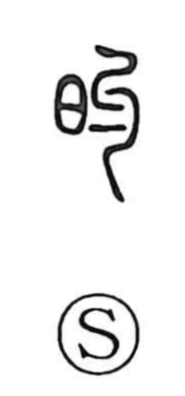

的

Kun: mato | On: teki
target ・ mark ・ adjectival suffix ・ clear
Explanation
的 belongs to a phonetic formation with 勺 as its sound element. An older writing is 旳, with 日 at the left. Its basic meaning is bright or conspicuous, something that stands out clearly.
The writing 的 became usual, and the word was applied to the white centre of an archery target. The visible mark provides an aim: a point at which attention or an arrow is directed. From distinctness also come exactness, certainty, and being precisely right.
Later grammatical use attaches 的 to a word to describe a condition or quality. This familiar suffix belongs to the character's extended linguistic functions.